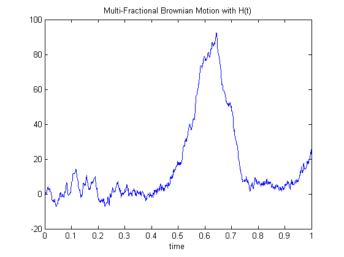

| FRACLAB Functions |
|
Generates a Mutli-fractional Brownian Motion (mBm) using Cholesky/Levinson factorization
MBM = mbmlevinson(N,H)
MBM = mBmlevinson(...,'Propertyname',Propertyvalue)
MBM = mbmlevinson(N,H) Generates the multi-fractional brownian motion, MBM, using a sample size, N, and a Holder function, H. This allows to model a process the pointwise regularity of which varies in time. The parameter N is a positive integer.
MBM = mbmlevinson(...,'Propertyname',Propertyvalue) Generates the multi-fractional brownian motion, MBM, applying the specified property settings. The property setting can be choosen from the list below :
| Property | Purpose |
|---|---|
| 'support' |
The MBM is computed using a specific size of time support, TMAX. The parameter TMAX
is a positive integer. |
| 'sigma' |
The MBM is computed using a specific standard deviation, S, at instant t = 1. |
| 'seed' |
The MBM is computed with a specific random seed, SEED. This is useful to generate the same path several times or to compare the paths of different MBMs. |
N = 1024; t = linspace(0,1,N); Ht = eval('0.5+0.3*sin(4*pi*t)');
mbm = mbmlevinson(N,Ht);
figure; plot(t,mbm);
title('Multi-Fractional Brownian Motion with H(t)'); xlabel('time')

N = 512; t = linspace(0,1,N); Ht = eval('0.1+0.8*t');
mbm1 = mbmlevinson(N,Ht,'support',1,'seed',100);
mbm2 = mbmlevinson(N,Ht,'support',5,'seed',100);
figure; plot(mbm1,'k'); hold on; plot(mbm2,'r');
legend('mbm1: Tmax = 1','mbm2: Tmax = 5');
title('Multi-Fractional Brownian Motion with different Tmax');
xlabel('number of points');xlim([0 N])

mBmQuantifKrigeage, fbmwoodchan, fbmlevinson
[1] N. Levinson "The wiener rms error criterion in filter design and prediction", Journal of Mathematics and Physics, Vol 25 (1947) 261-278.
| |
mBm2DQuantifKrigeage | mBmQuantifKrigeage | |